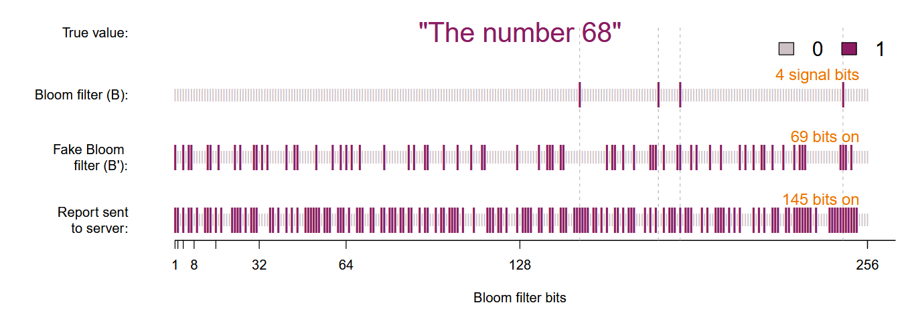

(ACMCCS, 2014) RAPPOR
- 论文题目:
RAPPOR: Randomized Aggregatable Privacy-Preserving Ordinal Response
- 关键词：
Local Differential Privacy, LDP
Randomized Response, RR
一、算法概述
RAPPOR是一种 单值频数统计 （每个用户只发送一个变量取值，数据收集者根据已有的或统计得到的候选值列表，统计其中每一个候选值的频数并进行发布）的代表方法。 RAPPOR采用客户端（client）的真实值 \(v\) ，按照一定方法以参数 \(k、h、f、p、q\) 在本地执行以下步骤：
1.信号编码（Signal）
使用 \(h\) 个哈希函数（hash functions）将客户端的值 \(v\) 表示成一个长度为 \(k\) 的向量 \(B\) ，每一位都是 \(0\) 或 \(1\) .
2.永久性随机响应（Permanent randomized response, PRR）
对于每一个客户端的值 \(v\) 和位 \(i (0 ≤ i < k \ in \ B)\) ，生成一个二进制值 \({B}_{i}^{'}\) ，该值等于
其中 \(f\) 是控制隐私级别的可调参数。 随后，这个 \({B}^{'}\) 被永久储存并固定，用作 \(v\) 的报道值。
3.瞬时性随机响应（Instantaneous randomized response, IRR）
产生一个 \(k\) 位数组 \(S\) 并初始化每一位为 \(0\) 。 以下面的概率设置 \(S\) 中的每个位 \(i\) ：
4.报道（Report）
将生成的 \(S\) 发送到服务器（server）。
5.示例（Example）
下图显示了 RAPPOR 算法的过程。 此处，客户端的值为 \(v = 68\) ，布隆过滤器（Bloom filter）的大小为 \(k=256\) ，哈希函数的数量为 \(h = 4\) ， 可调随机响应参数为： \(p = 0.5, q = 0.75,f = 0.5\) 。发送到服务器端的报告位数组显示在图的底部，可以看出 \(256\) 位中的 \(145\) 位被置 \(1\) 。
在 \(B\) （第二行） 中的 \(4\) 个 Bloom filter 位中，有 \(2\) 个传播到了 \({B}^{'}\) （第三位和第四位，如虚线所示）。 由于 \({B}^{'}\) 的永久性质，此用户端永远不会报告另外两个bit。 这意味着，通过来自该客户端的多个值（ “不同的” 68），攻击者最终可能会学习到 \({B}^{'}\) ，但很难继续推理通过差分隐私保护的 \({B}\) 的值。 在实践中，获得实际客户端的值 \(v\) 甚至会更难，因为多个值可能会映射到 Bloom filter 中的相同位。
{kind=link}
二、常见算法
RAPPOR 算法可以通过多种方式进行修改，具体取决于需要隐私保护数据收集的场景的具体情况。 下面介绍三种常见的RAPPOR算法：
One-time RAPPOR：
由客户端强制执行的一次性收集不需要纵向隐私保护。 在这种情况下，可以跳过IRR步骤，并且对真实客户端的值进行直接随机化足以提供隐私保护。
Basic RAPPOR：
如果要收集的字符串集（The set of strings）相对较小且定义明确，并且每个字符串都可以确定性地映射到位数组中的单个位，则无需使用具有多个哈希函数的 Bloom filter。 例如，收集有关性别的数据可以简单地使用一个两位数组，其中 “male” 映射到第 1 位（10），“female” 映射到第 2 位（01）。
Basic One-time RAPPOR：
这是 RAPPOR 最简单的形式，同时结合了前两个修改： 一轮随机化、使用字符串的确定性映射到唯一的位。
三、Python实现
文章使用Basic One-time RAPPOR 模拟了学习平均值为 \(50\) 和标准差 \(10\) 的正态分布的形状（四舍五入为整数）。 隐私约束为： \(q = 0.75,p = 0.5,f = 0\) 。代码结果显示了三种不同样本量的结果。
import numpy as np
import matplotlib.pyplot as plt
import random
N = 10000 # 样本数
dim = 50 # 样本可取的值的数量
samples_normal = np.random.normal(50, 10, N) # 生成正态分布随机数
n,bins,patches = plt.hist(samples_normal, bins=dim, alpha=0.5,range=(0,100),edgecolor='black',label='True Values')
one_hot_coding = np.eye(dim).tolist() #对dim个数创建one-hot编码
coded_and_num = list(zip(one_hot_coding,n))
coded_and_num_without0 = []
for i in coded_and_num: # 去掉dim中没有数据的维度
if i[1] != 0:
coded_and_num_without0.append(i)
rr_string_list = []
for bits, num in coded_and_num_without0:
for i in range(0,int(num)):
rr_string = ''
for bit in bits:
if bit == 1:
rr_bit = str(random.choices([1,0],[0.75,0.25])[0]) #q
else:
rr_bit = str(random.choices([0,1],[0.5,0.5])[0]) #p
rr_string += rr_bit
rr_string_list.append(rr_string)
c_i = [0]*dim
for rr in rr_string_list:
for i in range(0,len(rr)):
c_i[i] = c_i[i] + int(rr[i])
c_i_est = [ (c_i[i]-0.5 * N )/0.25 for i in range(len(c_i))]
print(c_i_est)
x = np.linspace(0,100,dim)
plt.bar(x,c_i_est,label='Estimate Values', color='black')
plt.legend()
plt.show()